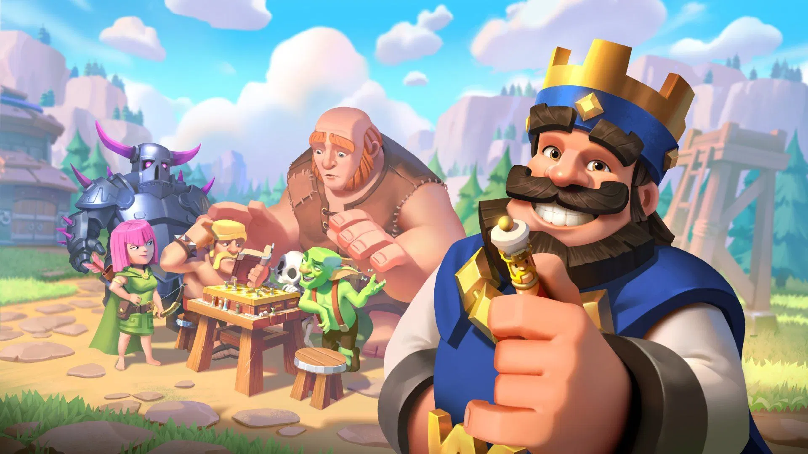
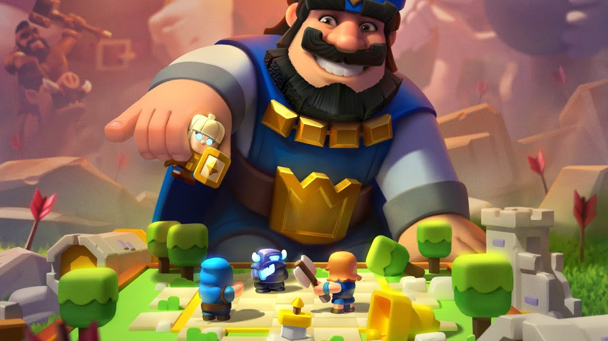
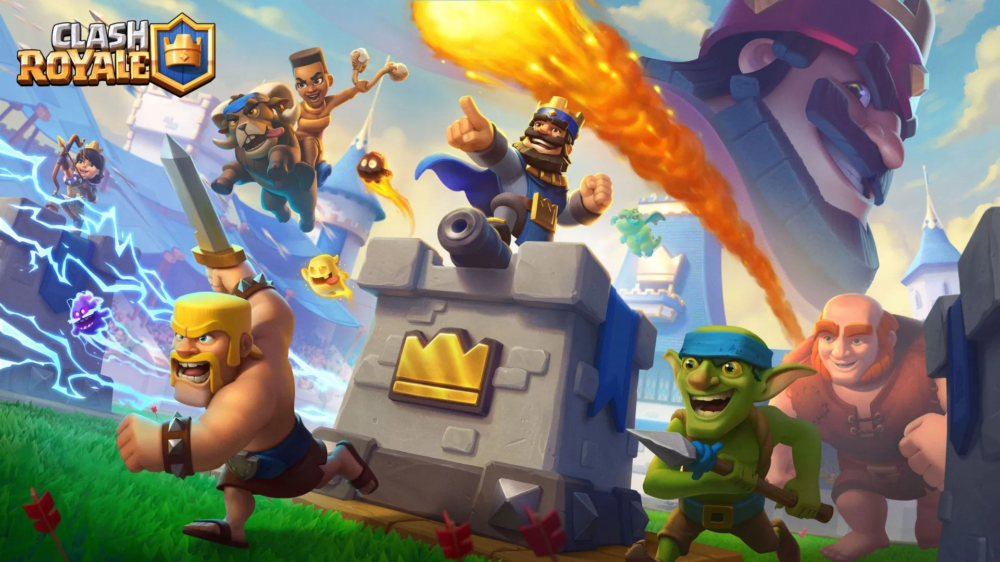

Главная
Колоды
Тактики
Контакты
Продажа аккаунтов
Тактики Игры
Для атаки башен используйте карту с условием победы, например «Кабан», «Икс-лук», «Гигант» или «Боевой таран».
Для агрессивных комбинаций используйте карты, которые хорошо сочетаются друг с другом, например «Огненный шар» и «Удар», «Дракон Инферно» и «Волшебник», «Шахтёр» и «Бочка гоблинов».
Для надёжной оборонительной стратегии размещайте здания перед Королевской башней и на расстоянии 3–4 клеток от реки
Всегда держите наготове как минимум одно основное защитное устройство и одно вспомогательное защитное устройство.

Наступательные Стратегии
Обязательно используйте мощную колоду.
Используйте карту с условием победы, которая будет атаковать башни, например «Кабан», «Икс-лук», «Гигант» или «Боевой таран». Это танки или основные источники урона. Затем вам понадобятся карты, поддерживающие условия победы, или карты, которые компенсируют слабые стороны ваших условий победы, чтобы вы могли стать сильнее.В начале матча дождитесь десяти единиц эликсира. Это поможет вам использовать эликсир для поддержки вашего наступления. Если вы поставите свинопаса, как только у вас будет четыре единицы эликсира, это станет вашей ошибкой. У противника может быть армия скелетов, и он сможет остановить вашего свинопаса, поскольку у вас не хватит эликсира на стрелы или взрыв.
Если у вас плохая комбинация, подождите, пока ваш противник сделает первый ход.
Допустим, у вас есть огненный шар, волшебник, торнадо и голем. Все эти карты плохо подходят для начала игры или слишком рискованны. Подождите, пока ваш противник сделает ход, и действуйте соответственно. Однако не стоит делать так в каждом матче. Если у вас есть такие карты, как скелеты, ледяной дух или летучие мыши, разыгрывайте их, потому что они не слишком рискованны для начала игры. Если карта стоит 1–2 эликсира, но при этом похожа на заклинание или ледяного голема, разрушающего стены, то, как правило, не стоит использовать её в цикле.
Выберите коронную башню, на которой сосредоточитесь, и продолжайте атаковать её.
Это ослабит ту же башню, так что весь ваш урон будет направлен в одно место. Это полезно в любом матче. Единственная причина, по которой вы не стали бы этого делать, — если противник поставил голема. Тогда вам следует атаковать другую линию с помощью кабана, X-лука или, предпочтительно, гиганта.Некоторые карты уязвимы перед другими картами, поэтому, если вы используете «Повелителя свиней», возьмите «Удар молнией» или «Электромага», чтобы убить «Инферно».
Добивайтесь выгодных сделок по эликсиру.
Используйте меньше эликсира для противодействия войскам, чем требуется для их розыгрыша. Например, противодействуйте орде миньонов с помощью стрел или П.Е.К.К.А. с помощью летучих мышей. Преимущество в эликсире позволяет разыгрывать больше карт. Некоторые карты очень эффективны с точки зрения выгодных сделок по эликсиру. Это башня инферно, рыцарь, скелеты и ледяной големПомните, что вам не нужно отвечать на все атаки. Вы можете позволить нескольким гоблинам коснуться вашей башни, чтобы у вас было больше эликсира для решающего рывка.
Подготовьте мощные комбинации войск.
Отправьте танк, а затем юнит с высоким уроном по площади, например волшебника. Танк, например гигант, будет сдерживать башню, пока волшебник её разрушает. Волшебник также уничтожит все карты роя, которые ваш противник выложит, чтобы противостоять ему.Однако у хорошего противника может быть башня инферно для вашего гиганта и рыцарь для вашего волшебника. В следующий раз обязательно добавьте в свой натиск ещё несколько отрядов, чтобы это не сработало.Используйте заклинания, которые помогут вам в наступлении, например «Электро-волшебник» для «Инферно» и «Мини-Пекка» для «Рыцаря». «Удар током», «Заморозка» и «Огненный шар» — хорошие примеры.
Используйте менее надёжные способы, чтобы быстро победить или проиграть.
Когда ваш противник разместит дорогое войско, немедленно бросайтесь в атаку, используя весь свой эликсир. Возможно, ваш противник не сможет этому противостоять, и вы быстро его уничтожите. Лучше всего использовать войска, наносящие большой урон, такие как кабан, королевский гигант и воздушный шар.Если вы не будете осторожны, противник может быть готов к этому и получить несколько положительных сделок по эликсиру.
Используйте синергию.
Эти карты хорошо сочетаются друг с другом, но отличаются от условий победы и карт, поддерживающих условия победы. Эти карты хорошо работают как по отдельности, так и вместе. Примеры: огненный шар и молния, П.Е.К.К.А. и валькирия, дракон инферно и волшебник, воздушный шар и принцесса, палач и торнадо, шахтёр и гоблинская бочка.
Знайте, чем может ответить ваш противник.
Если у вашего противника всегда есть инферно, чтобы противостоять вашей свинье, не размещайте свинью сразу же, как только она у вас появится. Дождитесь, пока ваш противник использует инферно и его здоровье снизится. Разместите свинью, и, если вам повезёт, у вашего противника не будет башни инферно в цикле.После того как ваш противник выкладывает карту, вам потребуется ещё 4 карты, чтобы вернуться к ней. Старайтесь следить за его рукой или хотя бы за его условием победы и основным защитным элементом.

Защитные стратегии
Разместите здания перед башней Короля и на расстоянии 3–4 клеток от реки.
Это позволит им отвлекать войска, идущие по обеим линиям, и лучше защищать ваши башни.
Если вы используете спавнеры, убедитесь, что войска направляются к башне, которую вы атакуете.
Разместите спавнер немного в стороне от этой линии.
Разместите за башней с короной отряд, который стреляет, например мушкетёров, ведьм, волшебников, принцесс, ледяных волшебников и т. д.
Башня с короной будет служить стеной для ваших войск. Теперь у вас есть двойная команда, которая сражается с войсками противника!Если они атакуют несколькими отрядами, разместите прочный отряд для отвлечения внимания (например, P.E.K.K.A), чтобы ваша башня не получила слишком много урона.Если вы поставите отряд перед башней, противник быстро его уничтожит. Этот способ защищает отряд, так что он останется в живых, чтобы в следующий раз сразиться с врагом и сэкономить ваш эликсир. Так что попробуйте!
Иметь хотя бы одно основное оборонительное подразделение и одно вспомогательное.
Основным подразделением может быть здание, варвары, орда миньонов или какие-то другие комбинации, работающие вместе. Вспомогательные защитники обычно атакуют на расстоянии и наносят большой урон.
Будьте всегда начеку.
Противник может быстро подослать к мосту всадника на свинье, и если вы отвлечётесь, он разрушит вашу башню. Постоянно следите за своим устройством, отключите уведомления и избавьтесь от отвлекающих факторов, таких как члены вашей семьи, которые без причины тычут пальцем в экран.
Используйте в своей колоде карты, которые противостоят тому же, что и у противника.
Используйте «Орду миньонов» и «Бочку гоблинов». У вашего противника есть только одна стрела, и ему придётся выбирать. Какую бы карту он ни выбрал, другая карта нанесёт большой урон. Это касается как нападения, так и защиты. «Армия скелетов» — потрясающая карта, но её легко нейтрализовать с помощью «Затмения». Заставьте противника выбрать эту карту, и все его карты будут уничтожены
